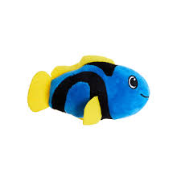
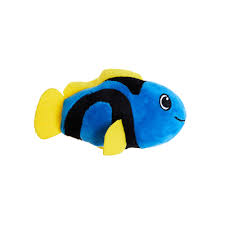
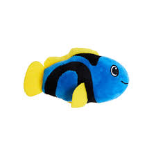

A gastronomía na Guarda é moi importante, coma en toda Galicia. Se chegas a Guarda poderás catar animales mariños de todo tipo:Mariscos, moluscos, peixes, etc 😎 😎 😎

O ROSAL
En o rosal temos o mellor que é os Muiños do Folón.
En o rosal tamen temos unhas rutas de senderismo incleíbles: 😈


 

 En o rosal tamen temos unhas rutas de senderismo incleíbles: 😈
En o rosal tamen temos unhas rutas de senderismo incleíbles: 😈